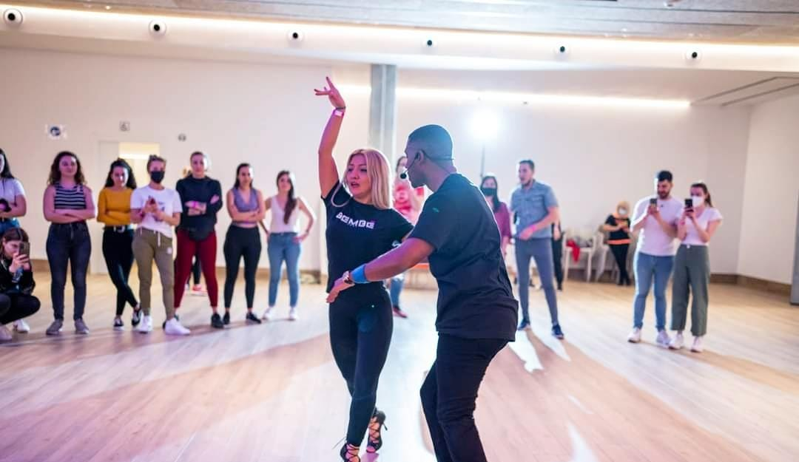

BAILES LATINOS
Salsa
Este tendrá la modalidad de salsa cubana (salsa tradicional originaria de cuba) la cual tiene su origen afro y latino, es decir, Chacha, Mambo, Rumba, Guaguanco, Pachanga, shines.
Al principio de la actividad, se impartirán solo clases para iniciarse en dicho género, más adelante, cuando la clase vaya tomando un cierto nivel, aportaremos un nuevo horario para ofrecer dos clases con dos niveles diferentes.
Bachata
Al igual que la salsa es importante ofrecer dos tipos diferentes de estilos, en este caso la bachata fusión (bachata tradicional con mezcla de estilos urbanos y Sensual) y la bachata sensual (estilo originado en Cádiz, España)
Estas clases también seguirán la misma evolución que las clases de salsa, ya que se trata de géneros muy populares.
Kizomba
Este servicio dependerá del nivel de los usuarios, de tal manera que aquellos que quieran iniciarse en este estilo acudirán a Kizomba I, y el resto de usuarios, que cuenten con capacidades adquiridas previamente en dicho estilo, acudirán a Kizomba II.
Lady style
En este caso la clase se imparte para chicas que quieran bailar libre sin pareja, que quieran perfeccionar su estilo en cualquier género de los acordados, es un estilo que normalmente se empieza de cero y se hacen secuencias de coreografías sensuales y femeninas.